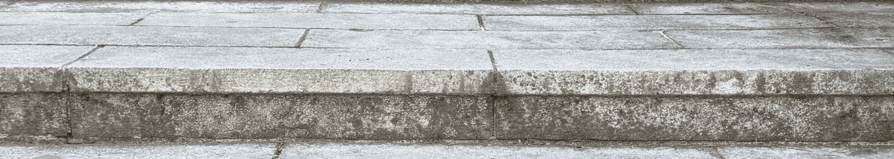

계단이란?

사전적 정의는 계단은 서로 다른 높이의 두 공간을 연결하기 위해 일정한 간격으로 설치된 연속적인 발판 구조물을 말합니다. 주로 사람이 오르내릴 수 있도록 만들어지며, 건축물의 실내나 외부에서 널리 사용되는 기본적인 수직 이동 수단입니다. 전기를 사용하지 않고도 이용할 수 있다는 점에서 엘리베이터나 에스컬레이터와 같은 기계적 수단과 구분되며, 가장 원초적이고 보편적인 형태의 연결 구조물로 볼 수 있습니다.
역할과 기능은 계단은 단순한 이동 통로 이상의 역할을 수행합니다. 공간과 공간을 효율적으로 연결하고, 사람들의 동선을 자연스럽게 유도하며, 건축물의 구조적 안정성과 기능성을 동시에 고려하는 설계 요소로 작용합니다. 또한 그 형태와 배치는 건축물의 외관이나 분위기에도 큰 영향을 주며, 때로는 상징적 또는 조형적 의미를 지닌 디자인 요소로 활용되기도 합니다. 이러한 점에서 계단은 기능성과 심미성을 동시에 갖춘 중요한 건축 요소입니다.